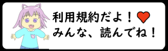

街使こねこ・公式

 YouTubは主に、Minecraftやゲームをやっています。
YouTubは主に、Minecraftやゲームをやっています。
 TwitterはYouTub情報や日常的なtweetもします。
TwitterはYouTub情報や日常的なtweetもします。
 Discordは雑談などを楽しむ場所です。
Discordは雑談などを楽しむ場所です。
 コネコちゃんページ
コネコちゃんページ
コネコちゃん・公式 ⇩⇩⇩⇩⇩

このホームページについて！
このホームページは、街使こねこが運営する公式ホームページです。
ゲームやMinecraftの参加は基本的にライブ配信でできます。
雑談用のDiscordサーバーの参加は自由です。
ご自由にお入りください。新規メンバーは、大歓迎です。
※Discordなどは、メニューから行けます。
利用規約
１.当サイトは迷惑行為、荒らし、サーバーの負荷などを禁止しています。
※見つかった場合は、BANされる恐れがあります。
※BANされますと、確実にBANリストに載ります。
２.当サイトのYouTubやDiscordなどを宣伝する際は荒らしを連れ込まない！
３.当サイトの猫ちゃんの画像は著作権があります。
※無断使用をしないで、許可を取ってから使用してください。
※イラストを模写したい！模写した画像を投稿したい！時は、許可はいりません。
４.Minecraftを楽しむ為に、ルールを守ってください。
５.にゃん狼よりも、自分の事を優先してください。
６.BANされたら新アカウントで入らないでください。
※見つかった場合は、BANされる恐れがありますが、Discordの機能で同じ人はBANされると入れません。
８.依頼は、TwitterやDiscordのDMでお願いします。

利用者はお読みください。
この項目は「 街使こねこ 」の関係者や使用素材を記載しています。
画像など、著作権がありますので、暇な時にご覧ください。
関係者 一覧
イラストは自作です。上は、菜奈先生です。
効果音やBGM.魔王魂
編集者・街使こねこ 街使こねこ公式サイト